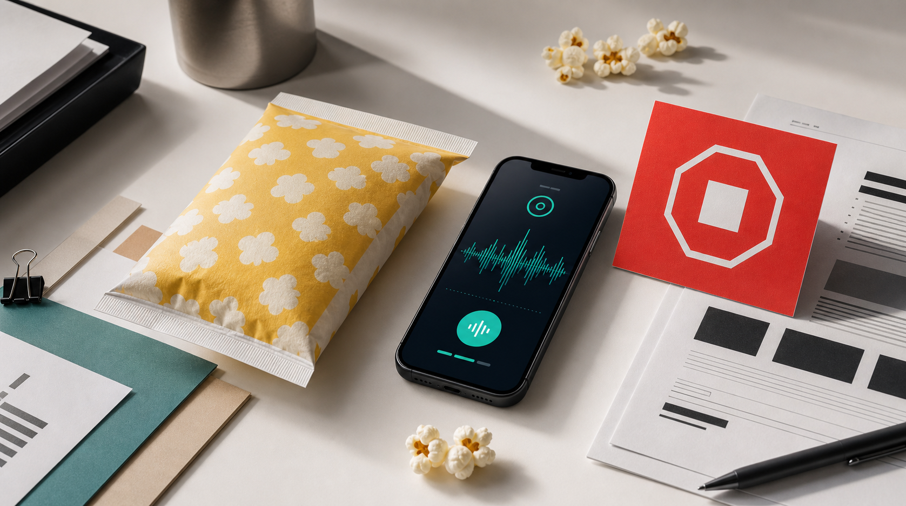

Start the bag
Roadmap microwave bags are built for the app-led workflow.
Concept 02 / Launch Memo
Download Roadmap. Use the microwave bags. Let the app listen for the pop pattern and alert you when the microwave should stop.

Roadmap microwave bags are built for the app-led workflow.
The app listens to the popping pattern during the microwave cycle.
The user stops the microwave. Clear accountability. Finally.